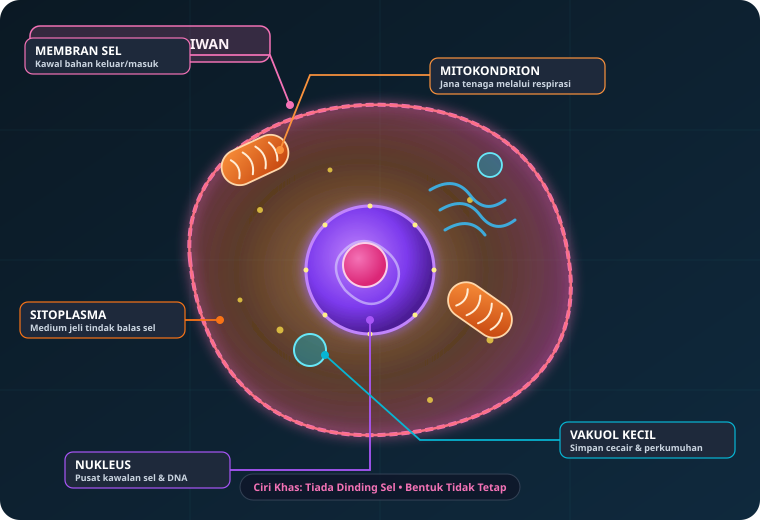
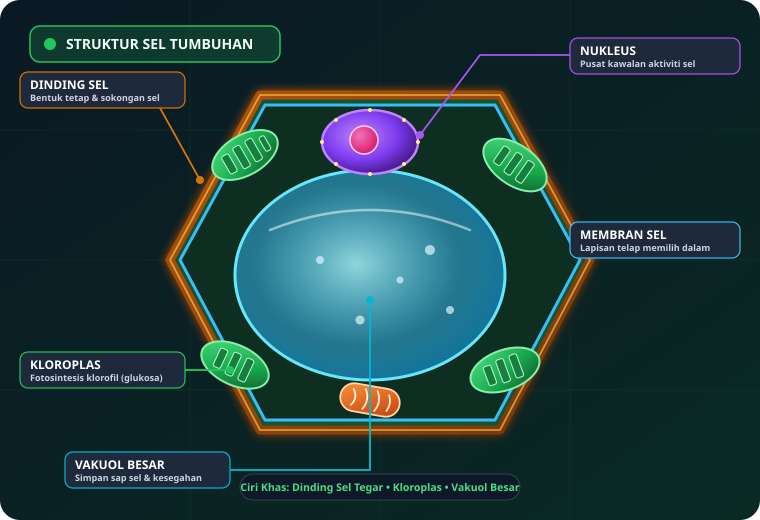
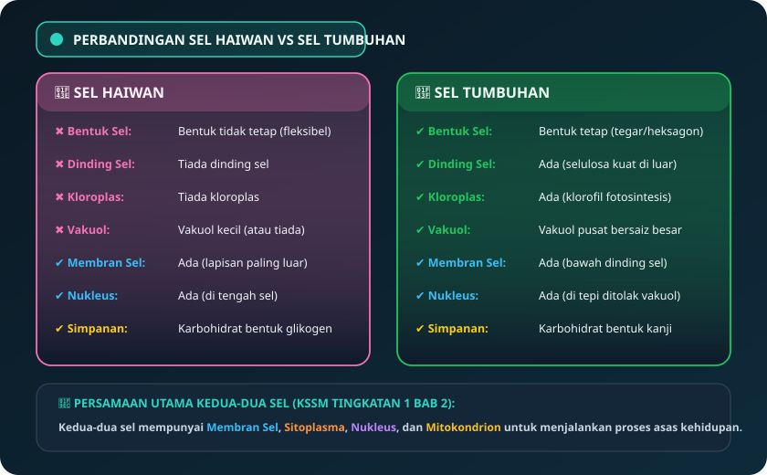

Pilih mod pengembaraan anda dan terokai dunia sel haiwan serta sel tumbuhan secara interaktif (KSSM Tingkatan 1 Bab 2).
Terokai makmal maya secara bebas menggunakan papan kekunci (WASD), tetikus atau joystick telefon. 8 stesen penuh dengan model 3D berkualiti tinggi, kuiz dan lencana.
Halakan kamera ke sekeliling bilik anda. Pusing peranti 360° untuk mencari 8 stesen organel maya yang berasingan dengan bantuan Smart Radar & Misi Akhir Harta Karun.
Gunakan 8 kad penanda bercetak yang diletakkan di atas meja. Halakan kamera pada kad untuk melihat model 3D organel muncul terapung tepat di atas permukaan kad.

Bentuk sel tidak tetap, tiada dinding sel atau kloroplas. Mempunyai membran sel, sitoplasma, nukleus, mitokondrion dan vakuol kecil.

Mempunyai bentuk tetap kerana dinding sel selulosa. Memiliki kloroplas untuk fotosintesis dan vakuol pusat besar berisi sap sel.

Ketahui 4 persamaan utama organel serta 5 perbezaan penting dari segi bentuk, dinding sel, kloroplas, vakuol dan simpanan karbohidrat.
Panduan kawalan dan penerokaan Makmal Eksplorasi Sel ARSelNel
Pilih pengalaman pembelajaran yang paling sesuai untuk peranti anda.
Terokai keseluruhan makmal 3D secara bebas menggunakan papan kekunci (WASD), tetikus atau joystick telefon. 8 stesen penuh dengan model 3D, kuiz dan lencana tanpa memerlukan kamera.
Semua Laptop, Komputer, Tablet & Telefon • Tanpa KameraHalakan kamera telefon atau iPad ke sekeliling bilik. Pusing peranti 360° untuk mencari 8 stesen organel maya mengikut arah mata angin dengan bantuan Smart Radar & Misi Akhir.
Kamera + Sensor Giroskop • Smart Radar 8 StesenSusun 8 kad penanda AR boleh cetak di atas meja. Apabila kamera mengesan kad, model 3D organel muncul tegak di atas kad tersebut lengkap dengan kuiz dan lencana.
Penjejakan Pose Kad 6DOF • iPad Safari & Semua Kamera💡 Anda boleh kembali ke Lobi Makmal Sains pada bila-bila masa dengan menekan butang Kembali.
Pelayar tidak dapat mengakses kamera peranti. Anda masih boleh menikmati keseluruhan pengembaraan makmal sel dalam Mod Jelajah 3D!
Sains Tingkatan 1 KSSM • Bab 2: Sel Sebagai Unit Asas Hidupan
Adakah anda pasti ingin keluar dari mod ini? Anda akan kembali ke Lobi Makmal Sains dan kemajuan sesi anda akan disimpan.
Panduan rujukan pantas organel dan fungsinya.
🎉 TAHNIAH! Anda telah menguasai 8 stesen Dunia Sel!
Namun, satu rahsia masih tersembunyi... Gunakan Smart Radar untuk mencari Peti Harta Karun ARSELNEL!
Jawab 3 soalan bonus biologi sel dengan tepat untuk membuka kunci peti harta karun!
Anda berjaya menyelesaikan Misi Jelajah Dunia Sel dan menemui Harta Karun ARSELNEL!